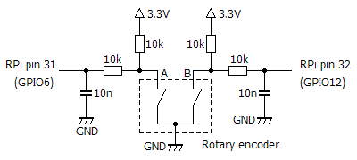
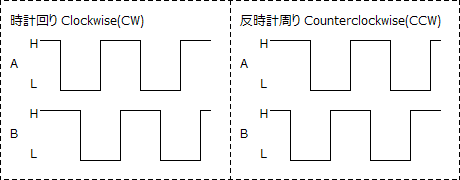

ロータリエンコーダ用Pythonプログラム
2018年05月14日 カテゴリー：Raspberry Pi
RasPd1でロータリーエンコーダを使っていましたが操作性がイマイチでしたので、もう少しエフェクター向けの動作となるようPythonプログラムを作り直しました。参考ページ→RaspberryPi + Python でロータリエンコーダを制御してみた
▽回路図

2つのスイッチ（AとB）のタイミングの違いを利用して回転方向を判断します。今回使用したのは秋月電子で購入したEC12E2420801というクリックありのものです。あまりチャタリングは発生しないようですが、念のためチャタリング対策のコンデンサと抵抗を挿入しました。一般にロータリーエンコーダの出力波形は下図のようになります。

▽テストプログラム
#!/usr/bin/env python
# coding:utf-8
import RPi.GPIO as GPIO
from time import sleep
Ap = 6 # Rotary_encoder_A
Bp = 12 # Rotary_encoder_B
GPIO.setwarnings(False)
GPIO.setmode(GPIO.BCM)
GPIO.setup(Ap,GPIO.IN)
GPIO.setup(Bp,GPIO.IN)
re_value = 0
def rot(channel):
global re_value
if GPIO.input(Ap) == 0 :
cw = 0 # Crockwise or countercrockwise
Ac = 0 # Ap switching counter
Last_Bp = GPIO.input(Bp) # Bp status
for m in range(0,100):
if GPIO.input(Ap) == 1:
break
sleep(0.0005)
if Last_Bp == 0 and GPIO.input(Bp) == 1 :
cw = -1
if Last_Bp == 1 and GPIO.input(Bp) == 0 :
cw = 1
for n in range (0,24):
Last_Ap = GPIO.input(Ap) # Ap status
sleep(0.002)
if Last_Ap == 1 and GPIO.input(Ap) == 0 :
Ac = Ac + 1
if Ac == 0:
re_value = re_value + cw * 1
elif Ac == 1:
re_value = re_value + cw * 4
elif Ac == 2:
re_value = re_value + cw * 8
elif Ac == 3:
re_value = re_value + cw * 16
else:
re_value = re_value + cw * 32
print re_value
GPIO.add_event_detect(Ap,GPIO.FALLING,callback=rot,bouncetime=50)
try:
while True:
sleep(60)
except KeyboardInterrupt:
pass
finally:
GPIO.cleanup()
まずAピンがHに戻るまでループを続け、Hになった瞬間のBピンの状態をみます。BピンがL→Hと変化していた場合は反時計回りで、逆の場合は時計回りと判断されます。次のループでは、Aピンが約50msの間に何回H→Lになったかカウントします。カウント数によって変化量が変わり、ロータリーエンコーダを速く回すほど値が大きく変化するということになります。
ロータリーエンコーダの種類によってはうまく動作しないかもしれません。また、値の更新が50msごとなのでリアルタイム性が必要な用途には向いていないだろうと思います。